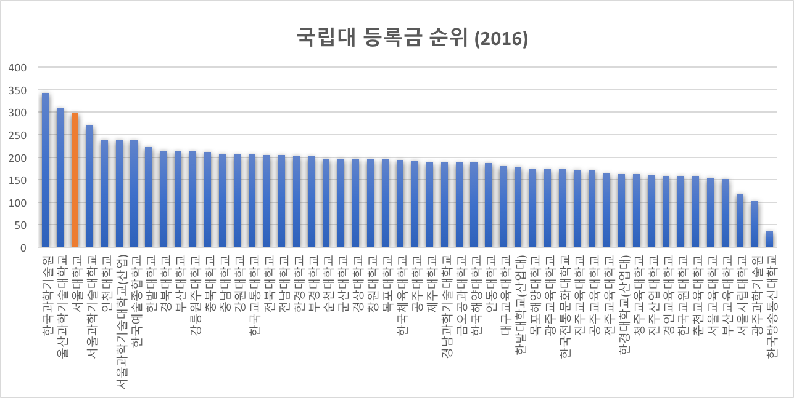
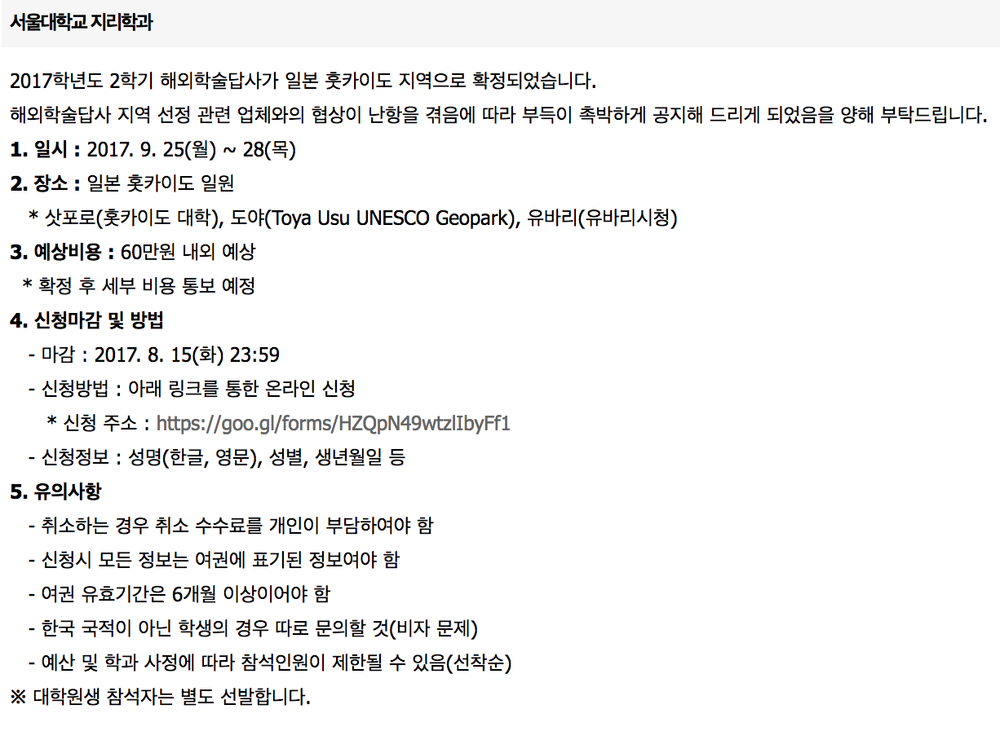
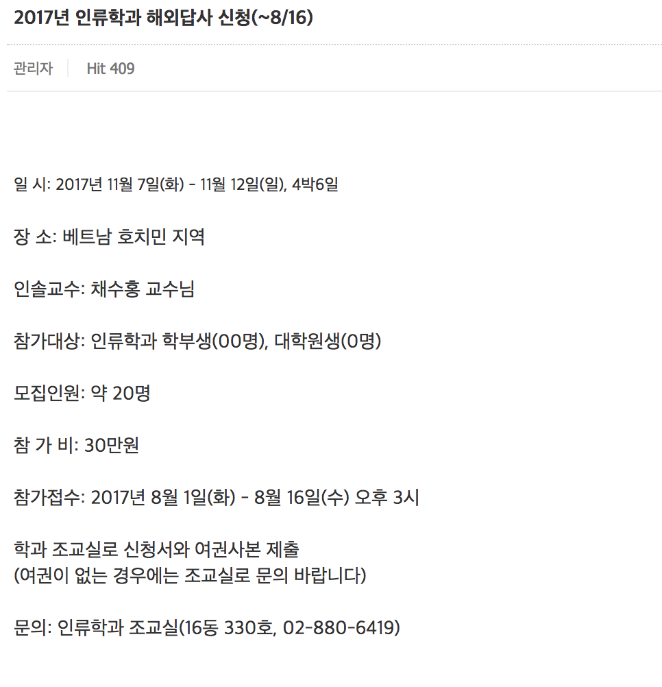
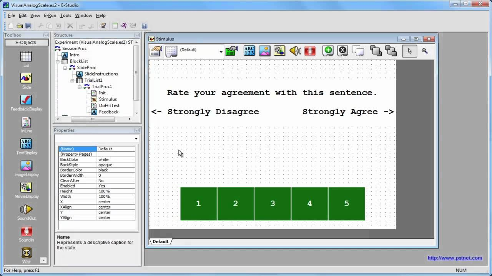

같은 대학, 다른 등록금
하한메
Point1 - 10%를 더 낸다
서울대학교 사회과학대학에는 차등 등록금 제도가 존재한다. 같은 단과대 내에서 차등적인 등록금이 적용된다는 것인데 오른쪽의 자료와 같이 사회대 내 인문사회계와 심리, 지리, 인류학과에 별개의 등록금이 명시되어 있다. 그 차이는 23만 7천원으로 등록금 자체의 약 9.7%에 달한다.
다른 학교의 사례를 살펴보면, 심리학과가 문과에 존재하는 연세대학교와 한양대학교의 경우에는 사회과학대 내에 차등 등록금이 존재하지 않는다.

서울대학교의 등록금 액수는 전국 국립대 중 3위에 달한다. 이미 국립대 치고 높은 등록금을 부담하고 있는 학생들에게 10%나 더 비싼 차등 등록금은 부담을 가중시키고 있는 것이다. 그렇다면 3개 학과에 대해서 왜 차등 등록금이 적용되어 있는 것일까?

Point2 - 답사가는 지리학과, 인류학과
과사무실에 문의한 결과, 지리학과와 인류학과의 경우에는 답사비 명목으로 등록금을 더 낸다는 답변을 들을 수 있었다. 실제로 지리학과의 경우 매년 1학기에는 국내, 2학기에는 해외답사를 간다. 그리고 인류학과도 학기를 번갈아가며 매년 1회 해외답사
답사비는 절반 정도를 학과 자체 지원금으로 처리하고 나머지를 학생 본인이 부담하는 형태이다. 인원은 희망자에 한해서 선발, 선착순, 무작위추첨의 형태로 채워지는데 지리학과 석사생의 증언에 따르면 신청했는데 자리가 없어서 떨어지는 경우는 사실상 없다고 한다. 즉, 희망자는 실질적으로 모두 다 갈 수 있다. 다시 말하면, 희망자는 답사비 명목으로 더 낸 등록금을 지원금으로 거의 다 돌려받을 수 있는 것이다.
그말인즉슨, 가지 않아도 졸업에 지장이 없는 답사를 희망하지 않는 사람은 답사비 지원금을 받을 일이 없고 답사비 명목으로 더 낸 등록금을 돌려받을 일도 없다는 뜻이다.


Point3 - 실험하는 심리학과
심리학과는 지리학과나 인류학과 같이 답사를 가지는 않는다. 대신 실험 수업이 타 과에 비해서 많다. 과사무실에서도 실험 수업에 필요한 비용들에 대한 명목으로 심리학과의 차등 등록금이 책정되어 있다고 답변했다.
실제로 많은 심리학과 실험 수업에서는 대부분 조별로 실험을 진행하는데 학부생들이 자체적으로 실험을 구성하고 진행하여 발표하는 식이다. 그렇기 때문에 실험을 진행하는 데 있어서 인쇄비, 검사도구 제작비, 다과비, 참여자에게 주는 기프티콘비 등 다양한 비용이 발생한다.


하지만 학과 차원에서 위 비용들에 대한 지원은 전혀 없다. 과사무실 조교는 심리검사도구인 E-Prime, 실험실, 전산실 등의 항목들에 예산이 편성되어 있다고 답했다. 그러나 심리학과 학부 실험수업 중 E-Prime을 쓰거나 실험실을 쓸 만한 수업은 '인지심리학 및 실험' 정도에 불과하다. 대부분의 다른 실험 수업은 수강생들이 자체적으로 제작한 도구, 기존 학회 논문에 등재되어 있는 척도, 무료 통계언어인 R을 사용하는 정도면 충분하다. E-Prime과 실험실은 대학원 수준의 실험연구에서 더 많이 사용된다.
역시 '인지심리학 및 실험' 과목을 듣지 않아도 졸업하는 데에는 아무런 지장이 없고 수강생은 해당 강의를 희망하지 않을 권리도 있다. 즉, 실험수업을 희망하지 않는 학생은 실험비 명목으로 더 낸 등록금을 돌려받지 못하고, 심지어 실험수업을 듣는 학생도 실질적으로 쓴 비용에 대해서 지원받지는 못한다.
결론 및 제언
정리해보면 등록금을 먼저 더 내고 그에 대한 권리를 스스로 찾아야하는 상황이다. 답사와 실험수업을 선호하지 않는 학생은 권리를 찾을 유일한 수단을 포기하는 것과 같다. 초기값이 잘못 설정되어 있는 제도이고 그 피해는 고스란히 학생들에게 돌아가고 있다. 차등 등록금에 대해 학과 차원에서 제대로 된 공지가 없기 때문에 일부 학생들은 이 사실조차 모른 채 졸업을 하는 경우도 생긴다.
일차적으로 3개 학과 모두 학과 차원에서 차등 등록금의 명목에 대해 정확한 공지가 이루어져야 한다. 서울대학교 학생은 본인이 낸 등록금이 어디에 쓰이는 지 알 권리가 있고 알 수 있어야 한다. 현 제도를 개선하기 위해서는 초기값을 바꿔야 한다. 우선 같은 등록금을 내고 수강신청 결과나 답사 신청여부에 따라서 차등적으로 내게 하는 방법이 있을 수 있다.
학교의 주인은 학생이다. 그 어떤 제도도 정당한 근거 없이 학생의 권익을 침해하고 있다면 그것은 나쁜 제도이다. 대한민국의 지성이라 불리는 서울대학교지만 아직 곳곳에 비합리적인 제도는 존재한다. 학교 구성원 모두가 작은 것부터 하나하나 바꾸어 나갈 수 있도록 노력해야 할 것이다.